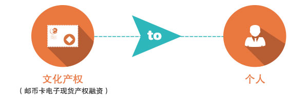
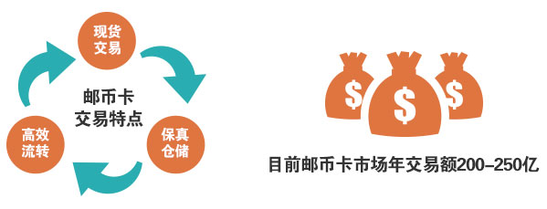
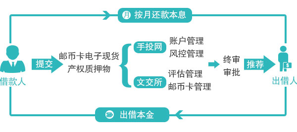

我们是谁？
手投网（www.ishoutou.com）成立于2013年，隶属于北京手投网投资控股有限公司，是由中国国际贸易学会投资规划研究工作委员会与中国企业合作促进会会员企业联合发起成立，是一家具有国资背景的创新互联网文化金融平台，业务涉及互联网金融、文化金融、金融IT三大领域。2015年，手投网完成了“文化产权融资交易系统”（简称CAFE系统）的研发工作，推出了互联网文化金融C2P平台，并成功上线，开启了中国互联网文化产权融资交易新时代。
作为一家致力于创新金融产品研发的互联网金融平台，手投网汇聚了互联网行业、金融领域顶尖的产品研发团队和管理人才，同时，设立经营管理委员会，由业界资深专家、教授担任委员，加强防控市场风险，推动资本多渠道引入和合规流动。公司坚持“创新，领跑”的精神、秉承“安全、持续”的理念，真心为每一位用户服务。
什么是C2P？
手投网定义的C2P（cultural assets to peer）就是文化产权对个人，是指有融资需求且持有上市的邮币卡现货的个人通过第三方平台手投网，向有理财需求的个人进行融资的互联网借贷业务。

什么是文交所邮币卡现货电子交易？
“文交所”是“文化产权交易所”和“文化艺术品交易所”的统称。文交所市场泛指邮币卡市场，通常指邮票、钱币、电话卡。文交所邮币卡交易是基于各级人民政府金融管理部门批准设立、接受证监会监管的文化产权交易所，以现货托管为交易基础，以客户端交易软件为交易平台，以互联网为纽带，实现注册会员的线上买卖交易，是落实国家政策、以金融扶持文化产业的一次划时代革命。
邮币卡具有现货交易、 保真仓储、高效流转等特点，有历史文化价值，可以保值且随时间升值。在文交所挂单的邮币卡经过专业的担保方、鉴定机构、保险公司和第三方资金托管机构层层把关，保障了邮币卡的真实、保值、安全。目前全国有62个线下邮币卡交易市场，邮币卡市场总体规模5000亿至6000亿元，年交易额200-250亿元。

什么是手投网C2P邮币卡质押融资业务模式？
2015年，手投网已与北京金马甲、北交所福丽特、南京文交所、江苏文交所等多家文交所建立合作关系。手投网以“助力邮币交易，振兴文化金融”为己任，开展“文武双全计划”，争取到2016年完成与全国文交所建立合作关系，并与文交所的几百家分支机构开展驻点合作，更好的为大众服务。

选择手投 钱途无忧
“手投网·创新金融·安全之选”
手投网拥有专业的产品研发团队，专注于趋零风险的互联网创新金融产品，摒弃传统的信贷产品；手投网以安全的平台、安全的产品为平台的根本定位，为用户提供安心的投资理财模式。手投网开发的“CAFE”系统属国内首创，拥有完全自主知识产权，开创了文化产权融资交易业务新模式。
“手投网·移动金融·便捷之选”
手投网倡导美观、便捷、人性的操控设计，以“用户思维”倾力打造wap、app移动终端的完美体验，让用户随时随地享受“爱手投，财自由”的乐趣。
“手投网·文化金融·潜力之选”
手投网以互联网+文化+金融的全新理念，推出互联网文化金融C2P平台，手投网的目标是，开创中国C2P第一平台。
企业精神：创新；领跑
企业价值观：安全；持续
企业愿景：爱手投·财自由
企业经营目标：中国C2P第一平台
社会责任：助力邮币交易，振兴文化金融。
中华民族五千年的悠久历史蕴藏了巨大的宝藏，文化的传播与发展永远都是时代必须延续的使命。邮币卡是中华文化的财富，邮币卡市场由实物交易发展到电子化交易，意味着邮币卡收藏品从小众走向大众，让更多的人加入到文化金融市场中来。手投网以“助力邮币交易，振兴文化金融”为己任，为中华文化的发展与传承贡献力量。